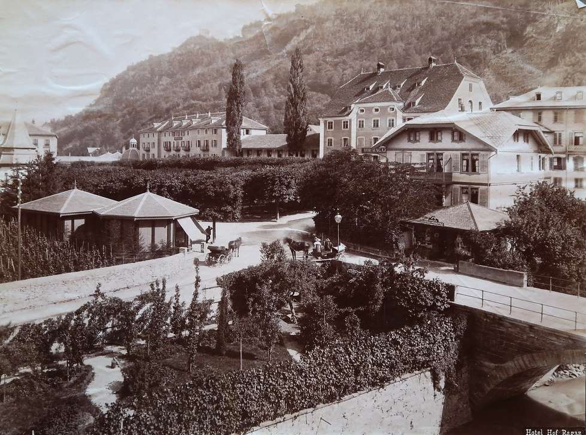
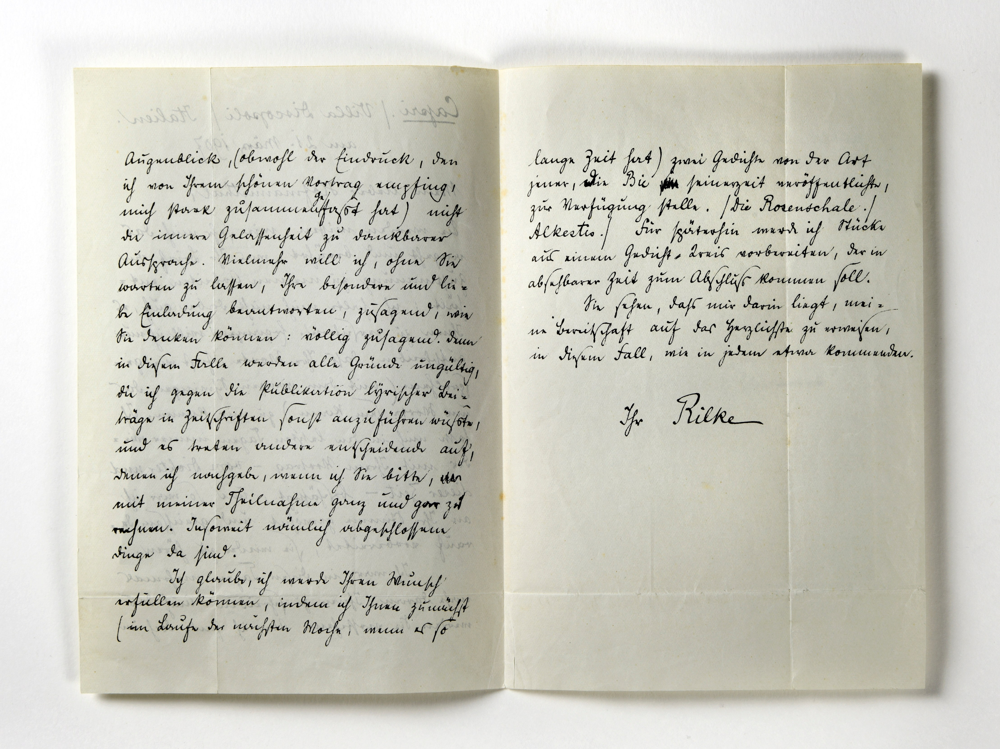
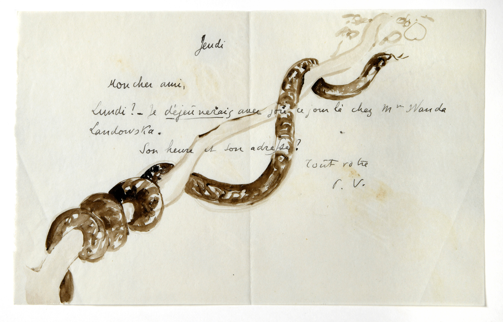
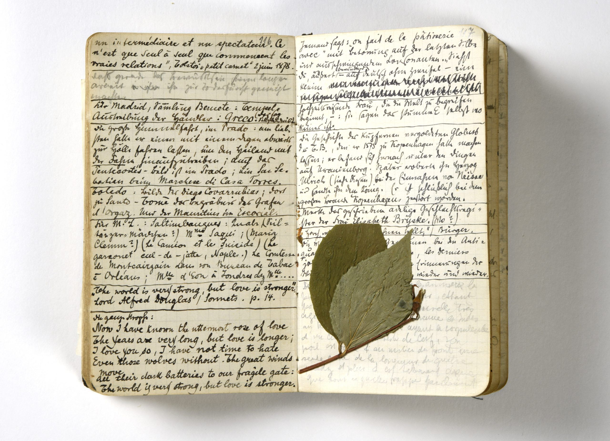
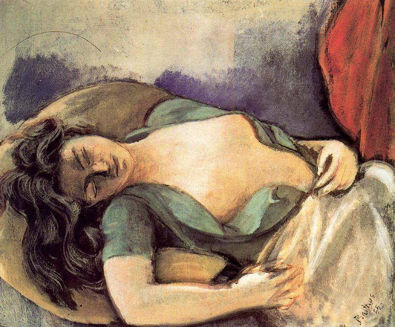
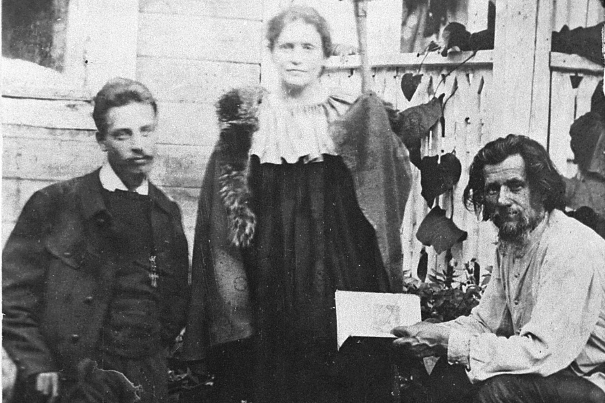
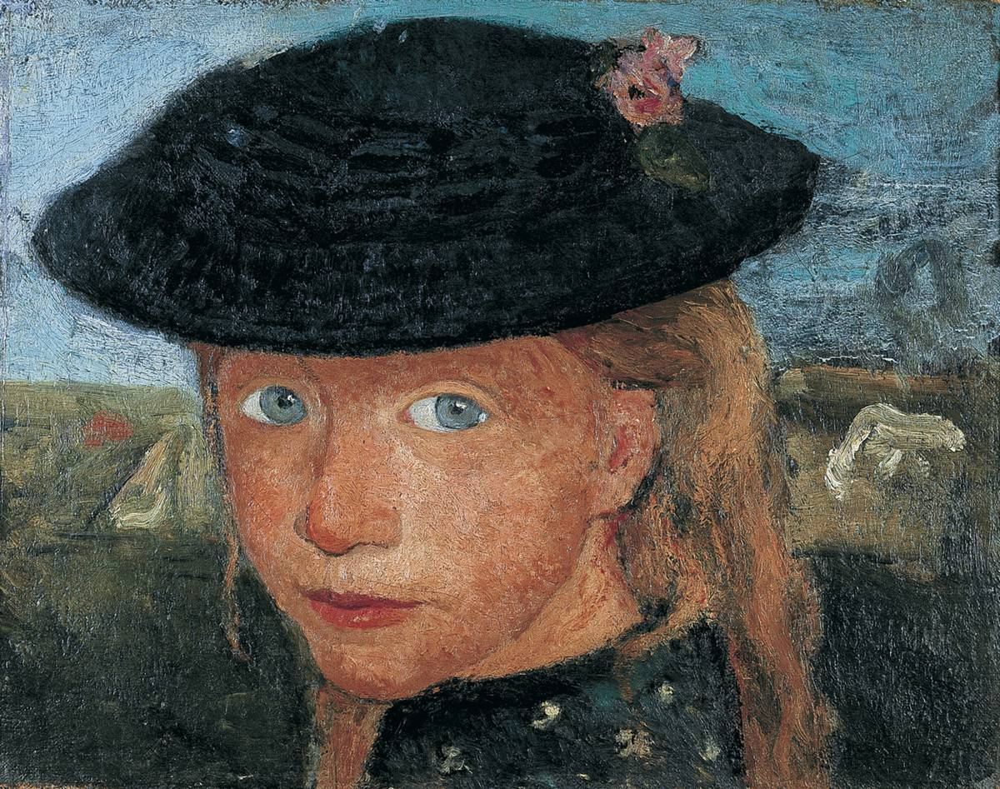

Aktualności
Bad Ragaz
Przed stu laty, na przełomie czerwca i lipca 1924 roku, Rilke gości w Bad Ragaz.
Poetę ujęła staromodna elegancja tego uzdrowiska, w którym zatrzymał się przejazdem kilka lat wcześniej, wracając z Soglio. Wyruszył z Muzot w towarzystwie Nanny Wunderly w niespieszną podróż automobilem przez Vaud, Neuchâtel i Berno, w Valmont skorzystał ze sposobności, by zasięgnąć porady doktora Haemmerliego, po czym 28 czerwca zawitał w Ragaz.
Uzdrowisko zmieniło od czasów wojny swój charakter — pojawiły się samochody, coraz większą część klienteli stanowili Anglosasi (w trakcie pobytu Rilkego bawili tam Mary Pickford i Douglas Fairbanks); niemniej, hotel Hof Ragaz, w którym zatrzymali się poeta wraz z księciem i księżną Taxis, zachował coś z dawnej, dziewiętnastowiecznej atmosfery — a to dzięki meblom w stylu empire oraz konnemu omnibusowi, dowożącemu gości ze stacji kolejowej.
Hotel Hof Ragaz (na pierwszym planie) na pocztówce z epoki
Rilke mógł do woli oddawać się myślom pełnym tęsknoty za minionymi czasami, aczkolwiek pozostało już niewielu tradycyjnych Kurgäste. „Dzisiejsi nie są odpowiednimi, dobrymi aktorami, którzy byliby w stanie właściwie ożywić szlachetną scenerię alei i trawników. (Quel public!)”. Przed hotelami jednak stały jeszcze dorożki — jak stwierdził z radością — „znów miałem sposobność (to jedna z moich największych przyjemności od lat chłopięcych), by wybrać się landem na przejażdżkę po okolicy”; tym sposobem odwiedził rodzinę Salis w ich zamku Bothmar w Malans.
Nabytek stulecia
Spuścizna po Rainerze Marii Rilkem, od prawie stu lat przechowywana w archiwum rodzinnym w Gernsbach, trafi do Deutsches Literaturarchiv Marbach. Zakup został sfinansowany m.in. przez kilka fundacji, rząd federalny oraz kraj związkowy Badenia-Wirtembergia.
Archiwum obejmuje łącznie ponad 10 000 odręcznie zapisanych stron ze szkicami utworów i notatkami, około 8 800 listów oraz ponad 470 książek i czasopism z biblioteki poety, opatrzonych licznymi adnotacjami, marginaliami i dedykacjami. Ponadto 131 nieznanych wcześniej rysunków Rilkego, około 360 fotografii oraz inne materiały biograficzne. Dokumenty pochodzą ze wszystkich okresów jego życia: od pierwszych fotografii i dziecięcych rysunków czterolatka, poprzez szkolne podręczniki, po wiersz Przyjdź, ty ostatnie cierpienie, który poeta zapisał w notatniku na krótko przed śmiercią.
List Rilkego do Hugona von Hofmannsthala, 1907 (DLA Marbach)
Zachowały się rękopiśmienne odpisy prawie każdego utworu Rilkego. 86 notatników, oprócz zapisków o charakterze pamiętnikarskim, zawiera także notatki, fragmenty, szkice wierszy oraz listów. Niezwykle obszerna korespondencja Rilkego, uważana przez uczonych za istotną część jego literackiego dorobku, obejmuje 2500 listów poety liczących ponad 7500 stron oraz około 6300 listów pisanych do niego. Wśród adresatów widnieją Lou Andreas-Salomé, Max Brod, Hans Carossa, Eugène Carrière, Eleonora Duse, Stefan George, André Gide, Oskar Maria Graf, Gerhart Hauptmann, Hermann Hesse, Hugo von Hofmannsthal, Harry Graf Kessler, Ellen Key, Paul Klee, Oskar Kokoschka, Annette Kolb, Karl Kraus, Else Lasker-Schüler, Gustav Meyrink, Robert Musil, Boris Pasternak, Alfred Polgar, Walter Rathenau, Auguste Rodin, Romain Rolland, Arthur Schnitzler, Georg Simmel, Paul Valéry, Heinrich Vogeler, Clara Westhoff-Rilke i Stefan Zweig.
List Paula Valéry do Rilkego, prawdopodobnie z roku 1925 (DLA Marbach)
Po zarchiwizowaniu materiały zostaną udostępnione badaczom twórczości Rilkego w formie cyfrowej. Ich różnorodność zostanie zaprezentowana szerszej publiczności na dużej wystawie w Deutsches Literaturarchiv w Marbach; inauguracja planowana jest z końcem 2025 roku, w 150. rocznicę urodzin poety.
Notatnik 13 (1909–1911), zawierający m.in. zapiski do Pamiętników Malte Lauridsa Brigge (DLA Marbach)
Balthus — Czas zatrzymany
W kolońskim Museum Ludwig trwa wielka wystawa prac francuskiego malarza Balthusa — to pierwsza ekspozycja jego obrazów na terenie Niemiec.
Jak dotąd żadne z niemieckich muzeów czy galerii nie może pochwalić się posiadaniem w swych zbiorach choćby jednego obrazu artysty. Kolońska wystawa zatytułowana Czas zatrzymany prezentuje dzieła z lat 1932–1960. Pominięto zarówno okres wczesnych prób w manierze impresjonistycznej, jak i dzieła okresu późnego, pełne motywów dekoracyjnych i elementów sztuki japońskiej.
Na wystawie można obejrzeć 25 obrazów (spośród około 280 z dorobku artysty) oraz 50 rysunków. Obok zadziwiająco spontanicznych szkiców, nie przystających do zdecydowanej siły i precyzji malowideł, zebrano również rysunki-szkice późniejszych znaczących dzieł, jak Le Chat de la Méditerranée, La Chambre czy La Lecon de Guitare, których nie udało się wypożyczyć.
Balthus Ètude pour le Rêve I, 1935
Balthus to artysta wymykający się współczesności. Motywy jego malarstwa, jakkolwiek zawsze związane z naturą, nie są bowiem realistyczne. Zawsze zostają zaaranżowane, zainscenizowane, zaś postacie, nawet na portretach, uchwycone w pozach nietypowych, niezwykłych.
Urodzony 29 lutego 1908 roku w Paryżu Arsène Davitcho Balthasar (Baltusz) Klossowski był młodszym synem pary niemieckich emigrantów — sławnego historyka sztuki Ericha oraz malarki Elisabeth Dorothee Spiro (Baladine). Dorastał w Paryżu, Berlinie, Genewie i Bernie. Rodzice utrzymywali ścisłe kontakty z artystyczną i literacką awangardą swoich czasów. Do kręgu przyjaciół rodziny należeli zarówno Pierre Bonnard i Henri Matisse, jak i André Gide oraz Jean Cocteau.
Aura nieomal legendarna spowija związek matki malarza Baladine z Rainerem Marią Rilkem. Poznali się w Paryżu (aczkolwiek sam Balthus twierdzi w swych rozmowach z Costanzem Costantinim, że do spotkania doszło w Genewie); niemniej prawdziwy rozkwit owej znajomości nastąpił w szwajcarskim okresie biografii poety, znajdując swe zwieńczenie we wspólnym poszukiwaniu i odnalezieniu wymarzonej samotni Rilkego w Muzot niedaleko Sierre w szwajcarskim kantonie Valais, gdzie poeta miał ukończyć dzieło swego życia — Elegie duinejskie oraz Sonety do Orfeusza.
Kiedy Rilke gościł w Genewie — czytamy w jego biografii Dźwięczące szkło — wielce spodobała mu się seria rysunków, jakie rok wcześniej wykonał jedenastoletni wówczas Balthus. Rysunki przedstawiały Mitsou, kotkę-znajdę, tworząc opowieść o jej życiu u rodziny Klossowskich aż do smutnego dnia jej zaginięcia. Poeta, podziwiany zarówno przez Balthusa, jak i jego starszego brata Pierre'a, z czasem zaczął czuć się jak członek rodziny; historia Mitsou tak bardzo go zachwyciła, że pozyskał dla niej wydawcę z Zurychu i zaproponował, iż sam napisze do niej krótki wstęp. 26 listopada 1920 roku, odbywając przechadzkę po parku, ułożył w myśli ową préface, zaczynającą się od słów: Qui connaît les chats?; spisał ją jeszcze tego samego wieczoru, wielce zadowolony, że w całości — bez słowa tłumaczenia — opracował ją po francusku. Baladine i Balthus byli zachwyceni.
Rilke i Rosja
Rilke odwiedził Rosję dwukrotnie, w roku 1899 oraz 1900. Doświadczenia wyniesione z obu podróży, w których towarzyszyła poecie Lou Andreas-Salomé — natury osobistej, artystycznej i duchowej — na trwałe zapisały się na kartach literatury europejskiej. W twórczości autora Księgi godzin wciąż pobrzmiewa fascynacja „rosyjskimi rzeczami”. Ta bezkresna, bogobojna kraina pozostanie dla Rilkego wyśnioną duchową ojczyzną.
Na wystawie Rilke und Russland, przygotowanej przez Deutsches Literaturarchiv Marbach, Nationalbibliothek Bern, Strauhof Zürich oraz Muzeum Literatury w Moskwie, zobaczyć można świadectwa owej legendarnej fascynacji — dzienniki, listy i fotografie, pochodzące ze zbiorów niemieckich i szwajcarskich, z Rilke-Archiv w Gernsbach, Lou-Andreas-Salomé-Archiv w Getyndze oraz archiwów rosyjskich. Ekspozycji towarzyszą współczesne fotografie autorstwa Mirko Krizanovica i Barbary Klemm oraz film krótkometrażowy Anastazji Aleksandrowej. Literacki esej do katalogu wystawy przygotowała Ilma Rakusa.
Lou Andreas-Salomé i Rainer Maria Rilke u Spiridona Droszyna, 1900 (DLA Marbach)
Paula Modersohn-Becker. Droga ku nowoczesności
Bucerius Kunst Forum proponuje nowe spojrzenie na dzieło Pauli Modersohn-Becker. Wystawa Der Weg in die Moderne, udostępniona publiczności od 4 lutego do 1 maja 2017 roku, prezentuje 80 obrazów i rysunków artystki, której twórczość przypada na wyjątkowy okres w historii sztuki, rozdzielający dwie jakże odmienne generacje: późnych impresjonistów i ekspresjonistów. Choć niepowtarzalny i awangardowy styl malarski Pauli Modersohn-Becker bywał za jej życia określany jako irytujący i obcy, dziś uchodzi za rewolucyjną zapowiedź ery sztuki nowoczesnej.
Paula Modersohn-Becker Kopf eines blonden Mädchens mit Strohhut, ok. 1904